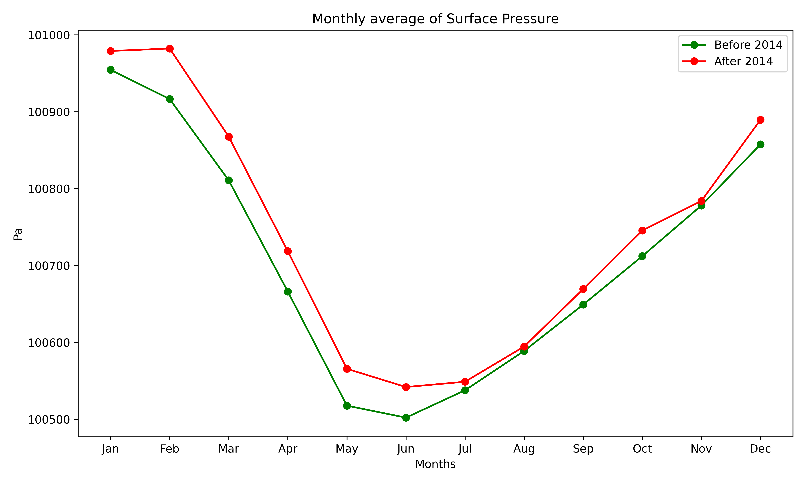

Nuclear Power Plant-data analysis.
Nuclear power plant is considered one of the finest way of green energy. Recently, Bangladesh started this journey in Nuclear world by Rooppur Nuclear Power Plant in Pabna.
However, local people first opposed this project due to the misconception about Nuclear Power plant. Concern raise from potential harm to crop production to various human diseases.
That's why, my friends and I wanted to evaluate basic environmental parameters before and after establishing nuclear power plant. We choose Kudan Kulam Nuclear Power Plant in Tamil Nadu, India for inspecting.
We evaluated environmental parameters like
- Temperature
- Pressure
- CO2 density
- Precipitation
We Collected our data from the era5 hourly data. To know about data downloading from era5, follow this blog. Dataset from era5 is in netCDF format. To know about netCDF dataset, read this. Our findings are given below:
Source code is available here. There you will know how to use python for data analysis. Feel free to use and share.